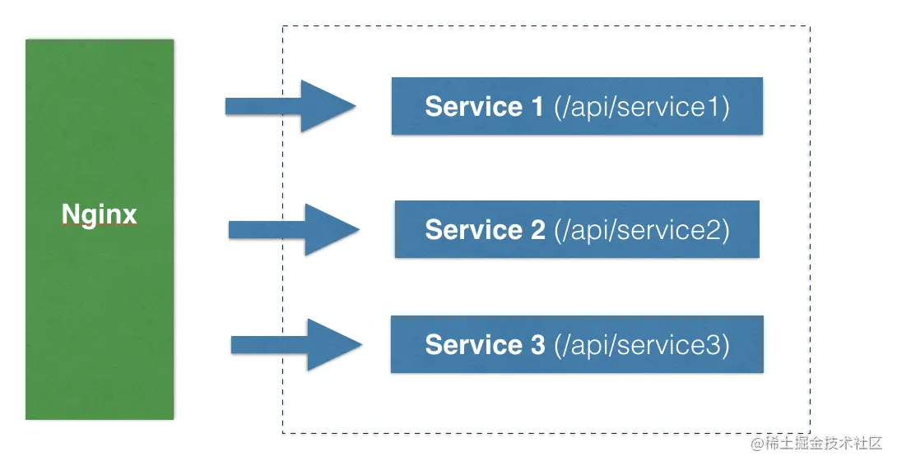
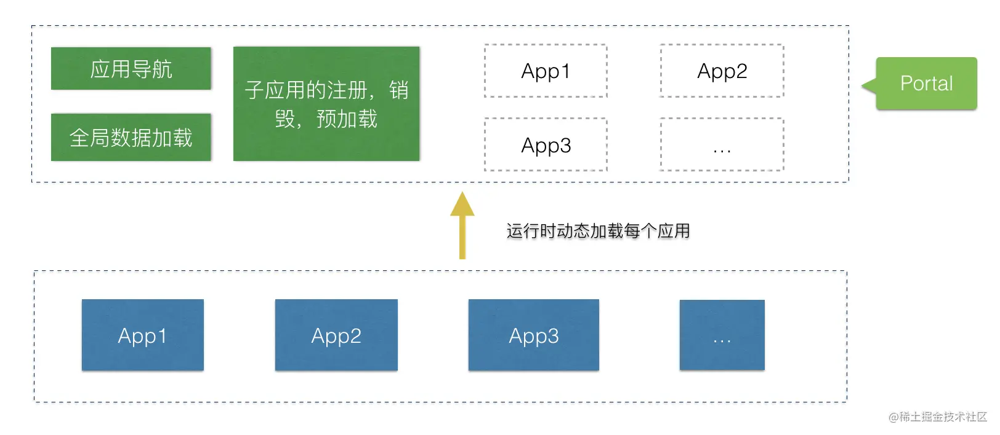

什么是微前端
什么是微前端
微前端这个词这两年很频繁的出现在大家的视野中，最早提出这个概念的应该是在 ThoughtWork 的技术雷达，主要是把微服务的概念引入到了前端，让前端的多个模块或者应用解耦，做到让前端的子模块独立仓储，独立运行，独立部署。
那么微前端和微服务到底有什么区别呢？
下面这张图是微服务的示意图，微服务主要是业务模块按照一定的规则拆分，独立开发，独立部署，部署后通过 Nginx 做路由转发，微服务的难点是需要考虑多个模块之间如何调用的问题，以及鉴权，日志，甚至加入网关层

对于微服务来说，模块分开解藕基本就完事了，但是微前端不一样，前端应用在运行时却是一个整体，需要聚合，甚至还需要交互，通信。

为什么需要微前端（Micro Front-end）
- 系统模块增多，单体应用变得臃肿，开发效率低下，构建速度变慢；
- 人员扩大，需要多个前端团队独立开发，独立部署，如果都在一个仓储中开发会带来一些列问题；
- 解决遗留系统，新模块需要使用最新的框架和技术，旧系统还继续使用。
微前端的几种方案对比
| 方式 | 描述 | 优点 | 缺点 | 难度系数 |
|---|---|---|---|---|
| 路由转发 | 路由转发严格意义上不属于微前端，多个子模块之间共享一个导航即可 | 简单，易实现 | 体验不好，切换应用整个页面刷新 | 🌟 |
| 嵌套 iframe | 每个子应用一个 iframe 嵌套 | 应用之间自带沙箱隔离 | 重复加载脚本和样式 | 🌟🌟 |
| 构建时组合 | 独立仓储，独立开发，构建时整体打包，合并应用 | 方便依赖管理，抽取公共模块 | 无法独立部署，技术栈，依赖版本必须统一 | 🌟🌟 |
| 运行时组合 | 每个子应用独立构建，运行时由主应用负责应用管理，加载，启动，卸载，通信机制 | 良好的体验，真正的独立开发，独立部署 | 复杂，需要设计加载，通信机制，无法做到彻底隔离，需要解决依赖冲突，样式冲突问题 | 🌟🌟🌟 |
| Web Components | 每个子应用需要使用 Web Components 技术编写组件或者使用框架生成 | 面向未来 | 不成熟，需要踩坑 | 🌟🌟🌟 |
上述只是简单列举了几种实现方式的对比，当然这些方案也不是互斥的，选择哪种方案取决你的业务场景是什么，以下几个前提条件对于技术选型至关重要：
- 是否为 SPA 单体应用？
- 技术栈是否统一，需要支持跨框架调用吗？
- 是否需要应用间彻底隔离？
我们是做企业级 SaaS 平台的，肯定是 SPA 单体应用，技术栈都是 Angular，应用之间不需要彻底隔离，反而需要共享通用样式和组件，避免重复加载。
所以选择的是：运行时组合 方案。
本博客所有文章除特别声明外，均采用 CC BY-NC-SA 4.0 许可协议。转载请注明来自 nccoder！